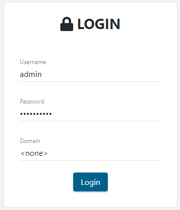
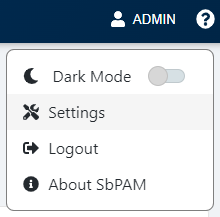
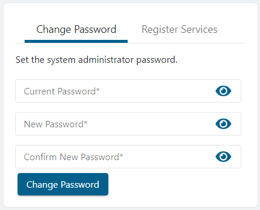

Summary
This article outlines how to change the password of SbPAM's built-in Admin account.
Instructions
Sign in to SbPAM using the Admin account.

IMPORTANT: The "Domain" field must be set to "<none>" in order to log-in with the built-in Admin account.
In the upper-right of the page, click Admin and then Settings.

The Change Password menu will appear on the page, and can be used to set a new password for the built-in Admin account.

If the password change is successful, then the user will be immediately logged-out of SbPAM and presented with the log-in page.
IMPORTANT: Previously used passwords cannot be used and will result in an error when attempting to change the password.